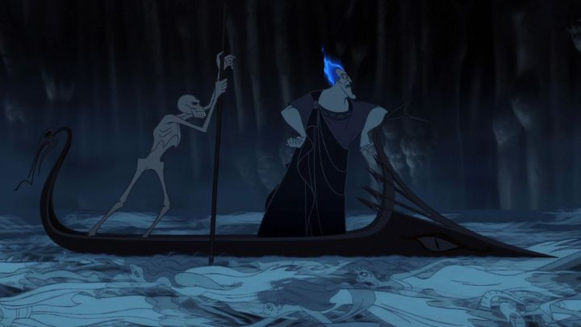

1997's "Hercules" is a different direction for Disney, who had primarily focused on serious, timeless version of fairy tales, with just the right pinch of humor for children. By comparison, "Hercules" is a slapstick modern-reference comedy, much more a spiritual successor to "Aladdin" about five years earlier (the pair John Musker and Ron Clements directed both). I didn't really care for "swords-and-sandals" movies as a kid, since I never really liked that sandals part, and so "Hercules" was not high on my personal preferences list (looking back now... there were a ton of bare-foot Disney movies in the 1990's and 2000's, someone on the production team must have had a giant festish). Rewatching the movie as an adult gave me a new appreciation for the stylistic approach to art and design. Unlike most other Disney movies, "Hercules" did have a stylistic language unique to itself, mostly defined by using swirls instead of sharp corners in everything, from character skin creases to the background buildings, trees and clouds. By itself, that's a cheap trick, but the Disney versions of Olympian Gods look pretty great, and so does their background art. Look again at Hades' underworld castle: that looks like a fantastical piece of concept art that'd never make it into a finished movie, and I'm impressed Disney had the guts to to keep it. The over-the-top style isn't for everyone though, and it's fair to say that this is not just the boldest-looking, but also one of the ugliest, animated movies Disney has made (usually deliberately, like for some of the titan monsters the hero eventually fights).Beyond just visuals, the movie also updates the Greek myth with a lot of modern touches, for better or for worse. The opening narrator is interupted and replaced by the story's true directors, "the muses," a set of African-American gospel-music group, with all the panache and flair of a Broadway chorus line. Most of the characters in "Hercules" are Greek... therefore, Italian... therefore, Italian-American... therefore, everyone speaks with a New York accent and attitude. That philosophy translates to the actors chosen for the roles. There's James Woods as the big-bad Hades, Danny DeVito as Herc's sidekick Phil, and Susan Egan in a Cher-inspired performance as Meg. I didn't realize until just rewatching it now that Zeus' right-hand man, Hermes, was a caricature (and was voiced by) Late Night band leader Paul Shaffer, yet another nod to New York. Some of that casting works. Hades is so memorable because of the unique performance by James Woods, making him look like a scheming con-artist, the type that'd trick you into a deal in the back-alleys of a New York, but with a temper and little patience. The animators got to use that temper for some fantastic outbursts, where his fire hair will burst into flames, just as he begins to beat up his two comic-relief sidekicks, Pain and Panic. On the flip side, there's Meg... good for Disney for having a different type for a female lead, but her sass and sarcasm was hard to like at first, and her smug face makes her an unlikely choice for the hero to fall in love with so easily (although, again, there aren't many beautiful people in the movie to take her place).  This updated version of "Hercules" is still somewhat true to other interpretations, in that the hero is destined to be the strongest mortal alive, but is otherwise a bit of a dunce. Originally born as a God to proud parents Zeus and Hera on Mount Olympus, the Gods all rejoice upon his arrival accept for Hades, who constantly schemes to ruin Zeus for banishing him to the worst position of the immortal realm (ruler of the Underworld). In particular, Hercules is destined to thwart plans decades in the making for Hades to steal the throne from Zeus. Hades secretly arranges for baby Hercules to be kidnapped, forced to drink a magic potion to turn him mortal, and then killed. By luck, Hercules doesn't drink the final drop, retaining his God-like strength, but he is indeed turned mortal, and no longer allowed to return to Mount Olympus. You'd think being the strongest boy in the land would make him popular among humans, but teenage Hercules is as awkawrd as they come, and despite his best intentions, his uncontrolled strength tends to destroy the town whenever he lifts a finger. His adoptive human parents finally tell him the truth, based on a medalion he had as a baby, and he comes to learn that Zeus is his true father, and that he can regain Godhood again if he can prove himself to be a "true hero." Armed with a new direction in life, he works with the satry (half-human, half goat) Phil as his boxing-style trainer to bulk up, control his powers, and look for monsters to fight and damsels to save. He's a greenhorn, but his strength and bravery soon make him the talk of Greece, the most popular man in the country. Surely, he's a hero now... right?"Hercules" takes a smart theme of not just having the lead character save the day, but to question what it truly means to be hero, versus simply being rich and famous for your feats of strength. After all, most heroes of Greek mythology were mortal men, without God-like powers; how is it they became remembered to be heroes? Seeing an awkward teenage Hercules also helps make him relatable, where he sings one of the movie's best songs ("I Can Go The Distance"). As a hero, Meg's position as a love-interest is staged, as she's working with Hades to free her soul from her own prior deal. Beyond that, the movie's snappy with it's jokes and puns, quick to make modern references, like how the popular hero Hercules gets merchandise like cups and action figures (that show off his massive pecs, as the girls point out). It's fast and fun, with enough attention-grabbing visuals to entertain kids (especially boys that want a sword-wielding hero in a Disney movie), but somehow it feels shallow, with a theme that could have been covered in a much shorter movie (at over 90 minutes, this was one of the longest animated movies yet from Disney). "Hercules" is worth rewatching from time to time, and its humor, characters and showtune-music numbers make it fun to sit through. But it's a bit too much style and not enough substance, not learning from it's protagonist's own mistakes.
- "Ani" More reviews can be found at : https://2danicritic.github.io/ Previous review: review_Hellsing_Ultimate Next review: review_Hetalia_-_Season_1_and_2